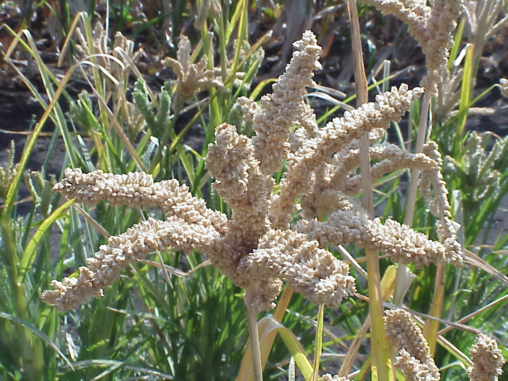
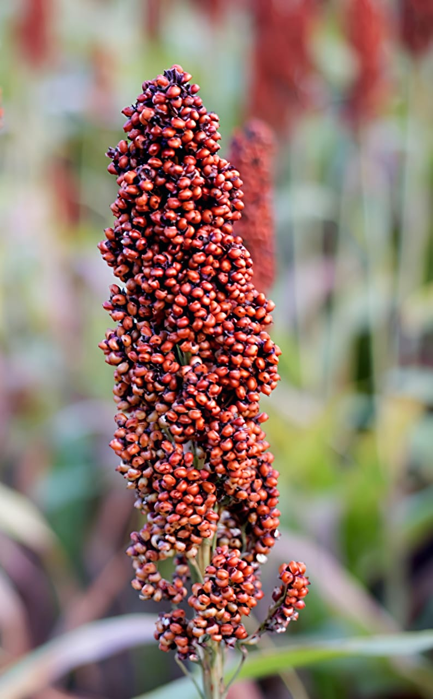
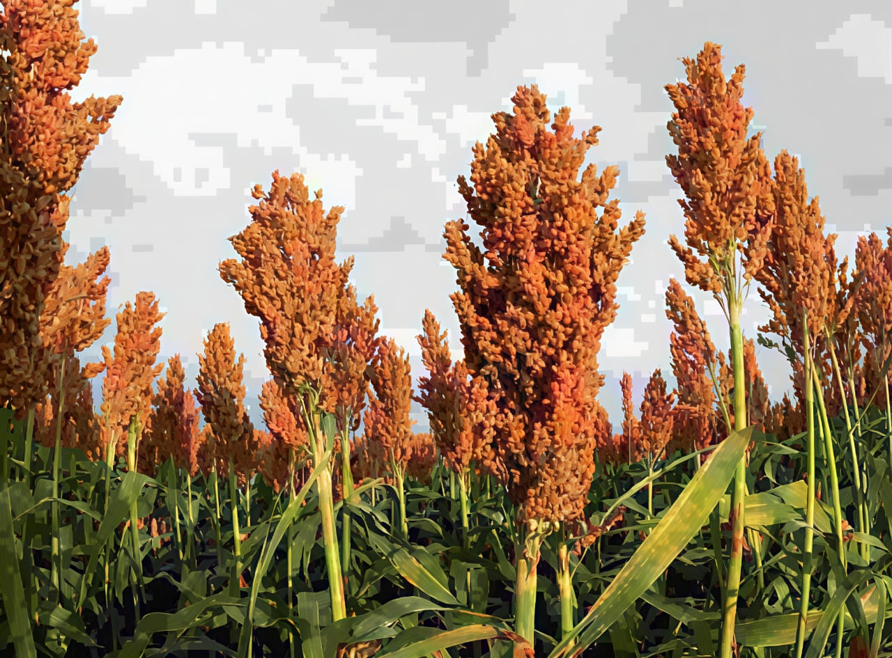

Type: Traditional / Local landrace (Eleusine coracana var. alba)
Where it is grown: Mainly in Tamil Nadu (Salem, Dharmapuri, Krishnagiri), some belts of Karnataka and Andhra Pradesh.
About: White-seeded finger millet variety, softer grains, sweeter taste compared to red and brown types. Plants are hardy and drought-tolerant.

Type: Open Pollinated / Traditional (Eleusine coracana)
Where it is grown: Widely cultivated across Tamil Nadu, Karnataka, Andhra Pradesh, Odisha, Uttarakhand.
About: Most common and widely cultivated ragi type, with reddish-brown grains. Plants are hardy, suitable for rainfed cultivation.

Type: Local landrace (Eleusine coracana)
Where it is grown: Small pockets of Tamil Nadu (Erode, Namakkal, Tiruvannamalai), some regions of Karnataka and tribal belts.
About: Dark brown/blackish grain type, less common but valued in certain traditional foods. Plants are hardy and grown under marginal soils.